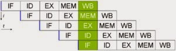
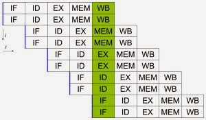
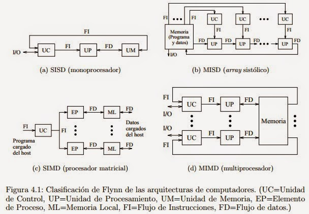
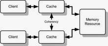

La computación paralela es una forma de cómputo en la que muchas instrucciones se ejecutan simultáneamente, operando sobre el principio de que problemas grandes, a menudo se pueden dividir en unos más pequeños, que luego son resueltos simultáneamente (en paralelo). Hay varias formas diferentes de computación paralela: paralelismo a nivel de bit, paralelismo a nivel de instrucción, paralelismo de datos y paralelismo de tareas. El paralelismo se ha empleado durante muchos años, sobre todo en la computación de altas prestaciones, pero el interés en ella ha crecido últimamente debido a las limitaciones físicas que impiden el aumento de la frecuencia. Como el consumo de energía —y por consiguiente la generación de calor— de las computadoras constituye una preocupación en los últimos años, la computación en paralelo se ha convertido en el paradigma dominante en la arquitectura de computadores, principalmente en forma de procesadores multinúcleo.
Desde el advenimiento de la integración a gran escala (VLSI) como tecnología de fabricación de chips de computadora en la década de 1970 hasta alrededor de 1986, la aceleración en la arquitectura de computadores se lograba en gran medida duplicando el tamaño de la palabra en la computadora, la cantidad de información que el procesador puede manejar por ciclo. El aumento del tamaño de la palabra reduce el número de instrucciones que el procesador debe ejecutar para realizar una operación en variables cuyos tamaños son mayores que la longitud de la palabra. Por ejemplo, cuando un procesador de 8 bits debe sumar dos enteros de 16 bits, el procesador primero debe adicionar los 8 bits de orden inferior de cada número entero con la instrucción de adición, a continuación, añadir los 8 bits de orden superior utilizando la instrucción de adición con acarreo que tiene en cuenta el bit de acarreo de la adición de orden inferior, en este caso un procesador de 8 bits requiere dos instrucciones para completar una sola operación, en donde un procesador de 16 bits necesita una sola instrucción para poder completarla. Históricamente, los microprocesadores de 4 bits fueron sustituidos por unos de 8 bits, luego de 16 bits y 32 bits, esta tendencia general llegó a su fin con la introducción de procesadores de 64 bits, lo que ha sido un estándar en la computación de propósito general durante la última década.
Un programa de ordenador es, en esencia, una secuencia de instrucciones ejecutadas por un procesador. Estas instrucciones pueden reordenarse y combinarse en grupos que luego son ejecutadas en paralelo sin cambiar el resultado del programa. Esto se conoce como paralelismo a nivel de instrucción. Los avances en el paralelismo a nivel de instrucción dominaron la arquitectura de computadores desde mediados de 1980 hasta mediados de la década de 1990. Los procesadores modernos tienen ''pipeline'' de instrucciones de varias etapas. Cada etapa en el pipeline corresponde a una acción diferente que el procesador realiza en la instrucción correspondiente a la etapa; un procesador con un pipelinede N etapas puede tener hasta n instrucciones diferentes en diferentes etapas de finalización. El ejemplo canónico de un procesador segmentado es un procesador RISC, con cinco etapas: pedir instrucción, decodificar, ejecutar, acceso a la memoria y escritura. El procesador Pentium 4 tenía un pipeline de 35 etapas. Además del paralelismo a nivel de instrucción del pipelining, algunos procesadores pueden ejecutar más de una instrucción a la vez. Estos son conocidos como procesadores superescalares. Las instrucciones pueden agruparse juntas sólo si no hay dependencia de datos entre ellas. El scoreboarding y el algoritmo de Tomasulo —que es similar a scoreboarding pero hace uso del renombre de registros— son dos de las técnicas más comunes para implementar la ejecución fuera de orden y la paralelización a nivel de instrucción.

El paralelismo de datos es el paralelismo inherente en programas con ciclos, que se centra en la distribución de los datos entre los diferentes nodos computacionales que deben tratarse en paralelo. La paralelización de ciclos conduce a menudo a secuencias similares de operaciones —no necesariamente idénticas— o funciones que se realizan en los elementos de una gran estructura de datos. Muchas de las aplicaciones científicas y de ingeniería muestran paralelismo de datos. Una dependencia de terminación de ciclo es la dependencia de una iteración de un ciclo en la salida de una o más iteraciones anteriores. Las dependencias de terminación de ciclo evitan la paralelización de ciclos.

Probablemente la clasificación más popular de computadores sea la clasificación de Flynn. Esta taxónoma de las arquitecturas está basada en la clasificación atendiendo al flujo de datos e instrucciones en un sistema. Un flujo de instrucciones es el conjunto de instrucciones secuenciales que son ejecutadas por un único procesador, y un flujo de datos es el flujo secuencial de datos requeridos por el flujo de instrucciones. Con estas consideraciones, Flynn clasifica los sistemas en cuatro categorías: SISD (Single Instruction stream, Single Data stream) Flujo único de instrucciones y flujo único de datos. Este el concepto de arquitectura serie de Von Neumann donde, en cualquier momento, sólo se está ejecutando una única instrucción. A menudo a los SISD se les conoce como computadores serie escalares. Todas las maquinas SISD poseen un registro simple que se llama contador de programa que asegura la ejecución en serie del programa. Conforme se van leyendo las instrucciones de la memoria, el contador de programa se actualiza para que apunte a la siguiente instrucción a procesar en serie. Prácticamente ningún computador puramente SISD se fabrica hoy en día ya que la mayoría de procesadores modernos incorporan algún grado de paralelizacion como es la segmentación de instrucciones o la posibilidad de lanzar dos instrucciones a un tiempo (superescalares). MISD (Multiple Instruction stream, Single Data stream) Flujo múltiple de instrucciones y único flujo de datos. Esto significa que varias instrucciones actúan sobre el mismo y único trozo de datos. Este tipo de máquinas se pueden interpretar de dos maneras. Una es considerar la clase de máquinas que requerirían que unidades de procesamiento diferentes recibieran instrucciones distintas operando sobre los mismos datos. Esta clase de arquitectura ha sido clasificada por numerosos arquitectos de computadores como impracticable o imposible, y en estos momentos no existen ejemplos que funcionen siguiendo este modelo. Otra forma de interpretar los MISD es como una clase de máquinas donde un mismo flujo de datos fluye a través de numerosas unidades procesadoras. Arquitecturas altamente segmentadas, como los arrays sistólicos o los procesadores vectoriales, son clasificados a menudo bajo este tipo de máquinas. Las arquitecturas segmentadas, o encauzadas, realizan el procesamiento vectorial a través de una serie de etapas, cada una ejecutando una función particular produciendo un resultado intermedio. La razón por la cual dichas arquitecturas son clasificadas como MISD es que los elementos de un vector pueden ser considerados como pertenecientes al mismo dato, y todas las etapas del cauce representan múltiples instrucciones que son aplicadas sobre ese vector. SIMD (Single Instruction stream, Multiple Data stream) Flujo de instrucción simple y flujo de datos múltiple. Esto significa que una única instrucción es aplicada sobre diferentes datos al mismo tiempo. En las máquinas de este tipo, varias unidades de procesado diferentes son invocadas por una única unidad de control. Al igual que las MISD, las SIMD soportan procesamiento vectorial (matricial) asignando cada elemento del vector a una unidad funcional diferente para procesamiento concurrente. Por ejemplo, el cálculo de la paga para cada trabajador en una empresa, es repetir la misma operación sencilla para cada trabajador; si se dispone de una arquitectura SIMD esto se puede calcular en paralelo para cada trabajador. Por esta facilidad en la paralelizacion de vectores de datos (los trabajadores formarían un vector) se les llama también procesadores matriciales. MIMD (Multiple Instruction stream, Multiple Data stream) Flujo de instrucciones múltiple y flujo de datos múltiple. Son máquinas que poseen varias unidades procesadoras en las cuales se pueden realizar múltiples instrucciones sobre datos diferentes de forma simultánea. Las MIMD son las más complejas, pero son también las que potencialmente ofrecen una mayor eficiencia en la ejecución concurrente o paralela. Aquí la concurrencia implica que no sólo hay varios procesadores operando simultáneamente, sino que además hay varios programas (procesos) ejecutándose también al mismo tiempo.

La memoria de acceso secuencial son memorias en la cuales para acceder a un registro en particular se tienen que leer registro por registro desde el inicio hasta alcanzar el registro particular que contiene el dato que se requiere. Estas memorias se clasifican en:
Un multiprocesador puede verse como un computador paralelo compuesto por varios procesadores interconectados que comparten un mismo sistema de memoria. Los sistemas multiprocesadores son arquitecturas MIMD con memoria compartida. Tienen un único espacio de direcciones para todos los procesadores y los mecanismos de comunicación se basan en el paso de mensajes desde el punto de vista del programador. Dado que los multiprocesadores comparten diferentes módulos de memoria, pudiendo acceder a un mismo módulo varios procesadores, a los multiprocesadores también se les llama sistemas de memoria compartida.
Dependiendo de la forma en que los procesadores comparten la memoria, se clasifican en sistemas multiprocesador UMA, NUMA y COMA.
Multiproceso es tradicionalmente conocido como el uso de múltiples procesos concurrentes en un sistema en lugar de un único proceso en un instante determinado. Como la multitarea que permite a múltiples procesos compartir una única CPU, múltiples CPUs pueden ser utilizados para ejecutar múltiples hilos dentro de un único proceso.
Uno de los criterios más importantes para la clasificación de las redes es el que tiene en cuenta la situación de la red en la máquina paralela, dando lugar a dos familias de redes: redes estáticas y redes dinámicas. Una red estática es una red cuya topología queda definida de manera definitiva y estable durante la construcción de la máquina paralela.
La red simplemente une los diversos elementos de acuerdo a una configuración dada. Se utiliza sobre todo en el caso de los multicomputadores para conectar los diversos procesadores que posee la máquina. Por la red sólo circulan los mensajes entre procesadores, por lo que se dice que la red presenta un acoplamiento débil. En general, en las redes estáticas se exige poca carga a la red.
Una red dinámica es una red cuya topología puede variar durante el curso de la ejecución de un programa paralelo o entre dos ejecuciones de programas. La red está constituida por elementos materiales específicos, llamados commutadores o switches.
Las redes dinámicas se utilizan sobre todo en los multiprocesadores. En este caso, la red une los procesadores a los bancos de memoria central. Cualquier acceso de un procesador a la memoria (bien sea para acceder a los datos o a las instrucciones) debe pasar a través de la red, por lo se dice que la red tiene un acoplamiento fuerte. La red debe poseer un rendimiento extremadamente bueno para no demorar demasiado a los procesadores que acceden a memoria.
En el ejemplo del subapartado anterior sólo había un emisor y un receptor unidos por una fibra óptica. En el mundo de las comunicaciones, y de las redes de computadores en particular, el medio que se utiliza para comunicarse suele estar compartido. Con una serie de ejemplos iremos viendo diferentes maneras de compartir el medio.
En el caso de la televisión o la radio, existen diferentes canales y emisoras que están compartiendo el medio. A fin de que no haya problemas, hay una regulación del espectro radioeléctrico: se tiene cuidado de que cada uno de los canales tenga asignada una frecuencia determinada y que no haya más de un canal usando la misma frecuencia. Este sistema se llama multiplexación por división de frecuencia y no sólo se utiliza en la radio y la televisión.
Por ejemplo, los sistemas de línea de abonado digital asimétrica (ADSL) utilizan este sistema para conectar la red de computadores de casa a Internet. Como se puede ver en la figura siguiente, por el cable telefónico circulan tres tipos de información, cada uno por su frecuencia asignada: la voz de las llamadas telefónicas, la información digital que viene de Internet (bajada) y la información digital que nosotros enviamos a Internet (subida).
Otro método de compartición del acceso en el medio se basa en la distribución de éste por parte de un dispositivo maestro. Por ejemplo, en la tecnología Bluetooth, los dispositivos próximos forman una red llamada piconet. En cada piconet se elige un dispositivo maestro que va preguntando a los demás dispositivos (que hacen las funciones de esclavo) quién debe utilizar el medio. En el caso de que alguien lo necesite, lo tendrá disponible durante cierto tiempo.
Cuando se va a enviar datos a largas distancias (e incluso a no tan largas), este debe pasar por varios nodos intermedios. Los cuáles son los encargados de dirigir los datos para que lleguen a su destino. Por lo cual se hace uso de lo que es una red conmutada. ya que estas Consisten en un conjunto de nodos interconectados entre sí, a través de medios de transmisión , formando así la mayoría de las veces una topología mallada, donde la información se traslada encaminándola del nodo de origen al nodo destino mediante conmutación entre nodos intermedios.
Una transmisión de este tipo tiene 3 fases:
Así mismo podemos decir que Se entiende por conmutación en un nodo, a la conexión física o lógica, de un camino de entrada al nodo con un camino de salida del nodo, con el fin de transferir la información.
La coherencia de cache hace referencia a la integridad de los datos almacenados en las caches locales de los recursos compartidos. La coherencia de la cache es un caso especial de la coherencia de memoria.

Los sistemas de memoria distribuida o multicomputadores pueden ser de dos tipos básicos. El primer de ellos consta de un único computador con múltiples CPUs comunicadas por un bus de datos mientras que en el segundo se utilizan múltiples computadores, cada uno con su propio procesador, enlazados por una red de interconexión más o menos rápida.
Sobre los sistemas de multicomputadores de memoria distribuida, se simula memorias compartidas. Se usan los mecanismos de comunicación y sincronización de sistemas multiprocesadores.
Un clúster es un tipo de arquitectura paralela distribuida que consiste de un conjunto de computadores independientes interconectados operando de forma conjunta como único recurso computacional sin embargo, cada computador puede utilizarse de forma independiente o separada.
En esta arquitectura, el computador paralelo es esencialmente una colección de procesadores secuenciales, cada uno con su propia memoria local, que pueden trabajar conjuntamente.
Las redes estáticas emplean enlaces directos fijos entre los nodos. Estos enlaces, una vez fabricado el sistema son difíciles de cambiar, por lo que la escalabilidad de estas topologías es baja. Las redes estáticas pueden utilizarse con eficiencia en los sistemas en que pueden predecirse el tipo de tráfico de comunicaciones entre sus procesadores.
Clases de redes de interconexión:
Por numerosos motivos, el procesamiento distribuido se ha convertido en un área de gran importancia e interés dentro de la Ciencia de la Computación, produciendo profundas transformaciones en las líneas de I/D.
Interesa realizar investigación en la especificación, transformación, optimización y evaluación de algoritmos distribuidos y paralelos. Esto incluye el diseño y desarrollo de sistemas paralelos, la transformación de algoritmos secuenciales en paralelos, y las métricas de evaluación de performance sobre distintas plataformas de soporte (hardware y software). Más allá de las mejoras constantes en las arquitecturas físicas de soporte, uno de los mayores desafíos se centra en cómo aprovechar al máximo la potencia de las mismas.
Interesa realizar investigación en la especificación, transformación, optimización y evaluación de algoritmos distribuidos y paralelos. Esto incluye el diseño y desarrollo de sistemas paralelos, la transformación de algoritmos secuenciales en paralelos, y las métricas de evaluación de performance sobre distintas plataformas de soporte (hardware y software). Más allá de las mejoras constantes en las arquitecturas físicas de soporte, uno de los mayores desafíos se centra en cómo aprovechar al máximo la potencia de las mismas.